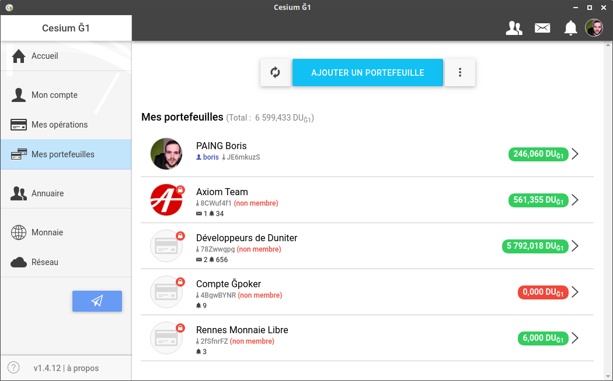

Cet onglet sert à accéder rapidement à d'autres portefeuilles que vous gérez.
Par exemple, si vous avez une entreprise, une association, ou simplement un projet, qui nécessite la création d'un portefeuille séparé (typiquement pour des raisons comptables), vous pouvez souhaiter pouvoir y accéder rapidement depuis votre compte principal.
Exemple :

Une autre raison pour laquelle vous pourriez avoir plusieurs portefeuilles est, par exemple, si vous souhaitez avoir un compte "simple portefeuille" avec un mot de passe plus court afin de pouvoir le taper plus rapidement lorsque vous souhaitez faire des échanges, tandis que votre compte membre, lui, a un mot de passe fort.